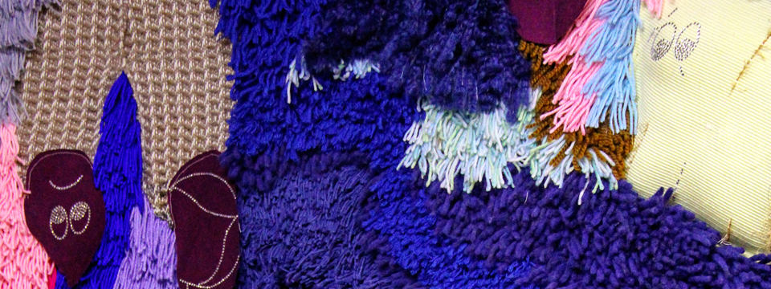

1230 5th Ave,
New York, NY 10029
Ongoing
Sarah Zapata: Siempre X

As part of its ongoing ARTE NUEVO series,
El Museo del Barrio invites artists
to propose unique, site-specific works
for its large wall in El Cafe. In this case,
sculptor and textile artist Sarah Zapata
spent several weeks in Peru studying indigenous
textile design and techniques, which she incorporated
into this large work. The artist is interested
in the intersection of popular and traditional
cultures as well as in a mix of natural
and fabricated materials. She has also been deeply
inspired by ariplleras, hand-sewn narrative works
that were made in Chile during the Pinochet dictatorship
and also throughout the guerilla occupation in Peru.
Made almost exclusively by women, these were an important
political tool, sometimes the only way that information
about the violence and repression could be disseminated
to other countries. The artist adapts these hand-made
techniques and ideas to a monumental scale
and incorporates plastic elements that are reminiscent
of pop culture imagery.
The Collection
Overview